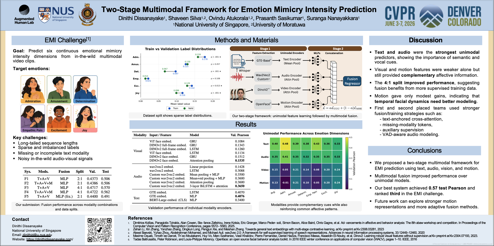

Two-Stage Multimodal Framework for Emotion Mimicry Intensity Prediction
A staged multimodal learning framework for predicting continuous emotion mimicry intensity from text, audio, vision, and optional motion features.

Click the poster to open the PDF version.
Emotion Mimicry Intensity prediction is a multimodal affective computing task that requires predicting continuous intensity values across six affective dimensions: Admiration, Amusement, Determination, Empathic Pain, Excitement, and Joy.
Instead of training a single end-to-end multimodal model from scratch, MimicMetrics uses a staged strategy. We first train unimodal encoders independently, then remove their prediction heads and fuse the learned representations using a lightweight MLP regressor.
Overall, text and audio provided the strongest standalone signals, while video and motion acted as more selective complementary cues, especially for dimensions such as Joy, Amusement, and Excitement.
Text Encoder
Trained on text embeddings.
Audio Encoder
Trained on wav2vec2-based audio embeddings.
Vision Encoder
Trained on DINOv2 face embeddings.
Motion Encoder
Trained on OpenFace AU + head-pose sequences.
Fusion Regressor
Concatenates learned representations and predicts six EMI dimensions.
| Modality | Feature Type | Input Dimension | Encoder Output |
|---|---|---|---|
| Text | GTE text embedding | 768 | 384 |
| Audio | Custom wav2vec2 embedding | 1024 | 384 |
| Vision | DINOv2 face embedding | 768 | 384 |
| Motion | OpenFace AU + head-pose sequence | 23 | 128 |
| Output | Six EMI dimensions | — | 6 |
We explored motion as an HCI-inspired auxiliary modality. While DINOv2 captures visual appearance, it may not fully capture behaviorally meaningful dynamics such as head pose, facial action units, blinking, mouth movement, and subtle temporal facial changes.
The motion branch did not provide a major performance advantage, but it served as a meaningful complementary cue and remains an interesting direction for future work.
git clone https://github.com/Dinithipurna/MimicMetrics.git
cd MimicMetrics
pip install -r requirements.txtpython src/staged_fusion_training.py \
--face_dir ./data/embeddings/face \
--audio_dir ./data/embeddings/audio \
--text_dir ./data/embeddings/text \
--train_csv ./data/splits/train_split.csv \
--valid_csv ./data/splits/val_split.csv \
--save_dir ./results/checkpoints \
--log_dir ./logs \
--batch_size 16 \
--device cuda:0python src/staged_fusion_training.py \
--face_dir ./data/embeddings/face \
--audio_dir ./data/embeddings/audio \
--text_dir ./data/embeddings/text \
--train_csv ./data/splits/train_split.csv \
--valid_csv ./data/splits/val_split.csv \
--use_motion_seq \
--motion_seq_dir ./data/motion \
--motion_hidden_dim 128 \
--motion_epochs 100 \
--save_dir ./results/checkpoints \
--log_dir ./logs \
--batch_size 16 \
--device cuda:0@inproceedings{dissanayake2026mimicmetrics,
title={Two-Stage Multimodal Framework for Emotion Mimicry Intensity Prediction},
author={Dissanayake, Dinithi and Silva, Shaveen and Atukorala, Ovindu and Sasikumar, Prasanth and Nanayakkara, Suranga},
booktitle={Proceedings of the IEEE/CVF Conference on Computer Vision and Pattern Recognition Workshops},
year={2026}
}